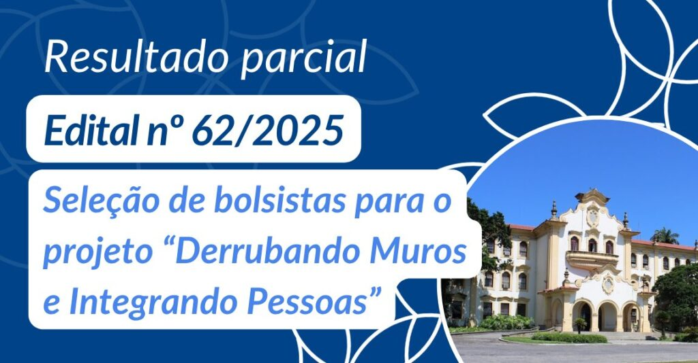
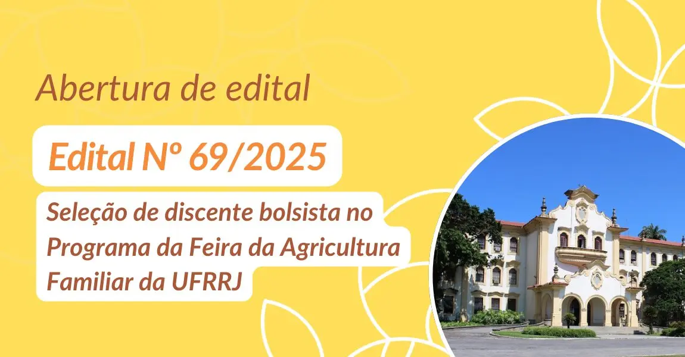
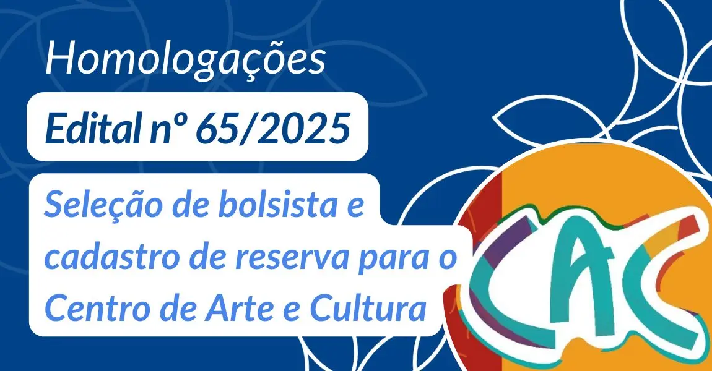
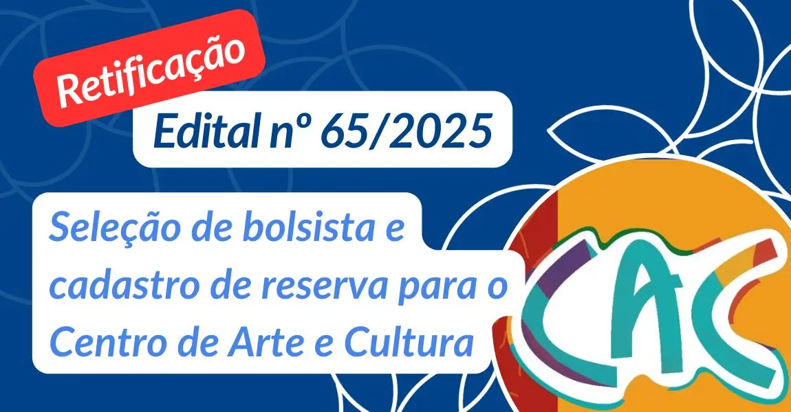
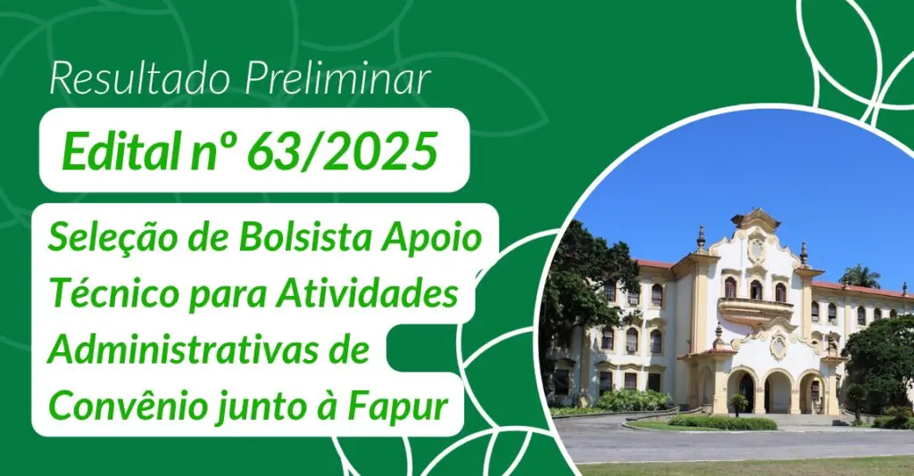
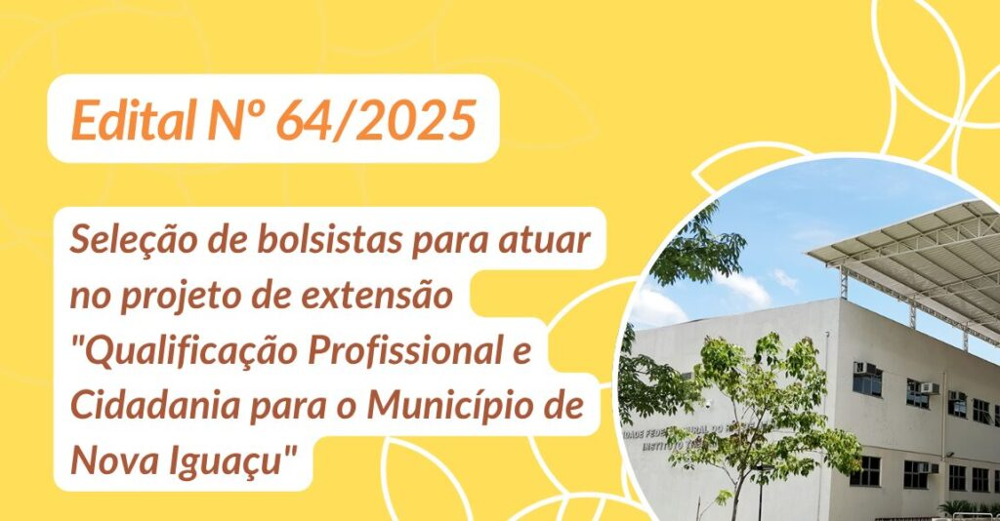

Extensões da Universidade

Edital Proext Nº 62/2025 – Del/Proext/Ufrrj – Resultado Parcial da seleção do Projeto Derrubando Muros

Edital nº 69/2025 – Seleção de discente bolsista no Programa da Feira da Agricultura Familiar da UFRRJ – FAF/PROEXT

Homologações do edital nº 65/2025 – Seleção de bolsista e cadastro de reserva para o Centro de Arte e Cultura

Retificação do edital nº 65/2025 – Seleção de bolsista e cadastro de reserva para o Centro de Arte e Cultura

Edital nº 63/2025 – Resultado final

Edital nº 65/2025 – Seleção de bolsista e cadastro de reserva para o Centro de Arte e Cultura

Edital nº 63/2025 – Resultado parcial – Seleção de Bolsista Apoio Técnico para Atividades Adminsitrativas de convênio junto à Fapur

Cancelamento do Edital nº 64 – ITR/PROEXT/UFRRJ

Resultado final do Edital DEL/PROEXT/UFRRJ nº 62/2025 referente ao projeto “Derrubando Muros e Integrando Pessoas”
